MnemoVetDDx App
Esta aplicación está diseñada para mejorar la forma en que estudiantes de Veterinaria y veterinarios clínicos afrontan los retos diagnósticos en medicina interna de pequeños animales. Mediante un enfoque práctico basado en reglas mnemotécnicas, convierte el aprendizaje de diagnósticos diferenciales en un proceso más rápido, útil y ameno, tanto para estudiar como para aplicar en consulta.
Características clave:
- Aprendizaje ágil con reglas mnemotécnicas: Nuestro método se apoya en reglas mnemotécnicas para fijar conceptos de forma eficaz: desde acrónimos breves hasta palabras “inventadas” fáciles de recordar. El objetivo es reducir tiempo de estudio y ganar soltura en la toma de decisiones clínicas.
- Listas completas de diagnósticos diferenciales: Accede a listas concisas y actualizadas de diagnósticos diferenciales, organizadas por especialidades y sistemas, para consultar en segundos lo más relevante en cada situación clínica.
- Navegación intuitiva y rápida: Encuentra síntomas, procesos patológicos y sus diagnósticos diferenciales a través de un menú principal claro y estructurado por sistemas o especialidades, abarcando desde ecografía abdominal hasta traumatología.
- Perlas clínicas y consejos prácticos: Incluye un compendio de “perlas” clínicas: recomendaciones útiles y aplicables, de esas que rara vez aparecen en los manuales pero marcan diferencia en la práctica diaria.
Novedades:
En la última versión, la sección de diagnóstico general incorpora una lista ampliada de enfermedades y condiciones genéticas a las que distintas razas de perros y gatos pueden ser predisponentes. Además, se han añadido nuevos diagnósticos diferenciales y se ha actualizado la información de la sección de parámetros normales y valores fisiológicos.
Para ver la app en acción y conocer más sobre su funcionamiento, visita el siguiente enlace: [Añade aquí el enlace]
Galería de Imágenes
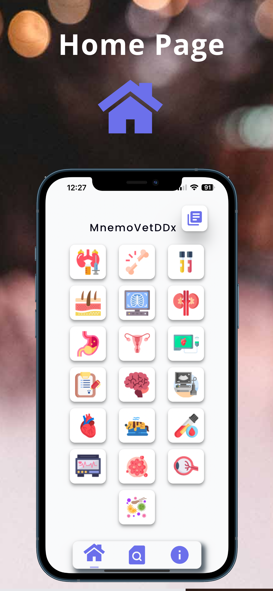
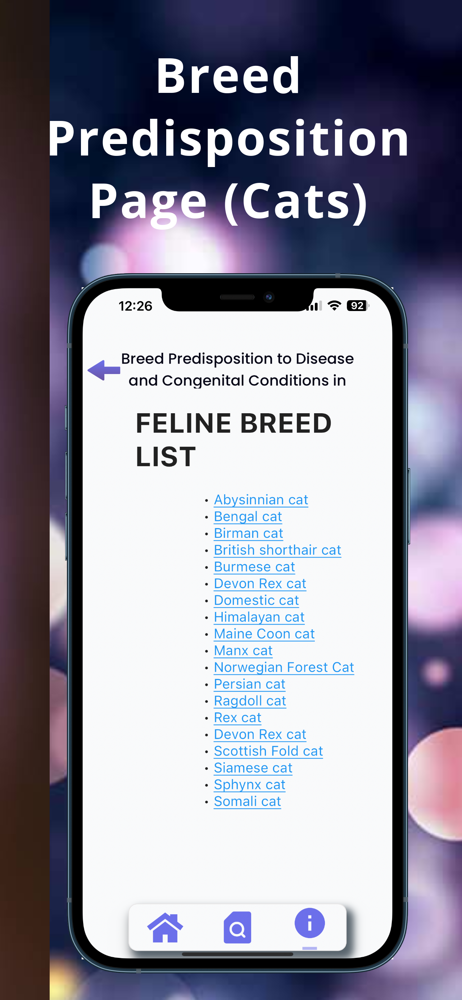
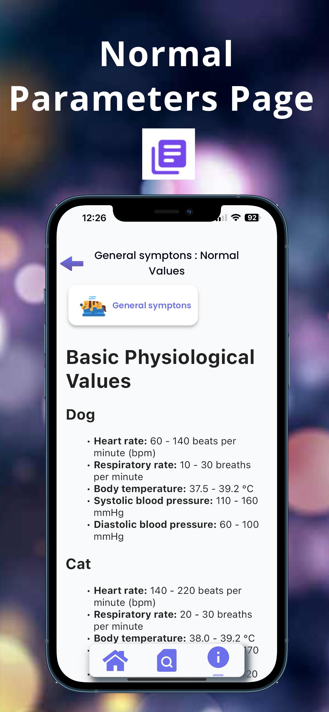
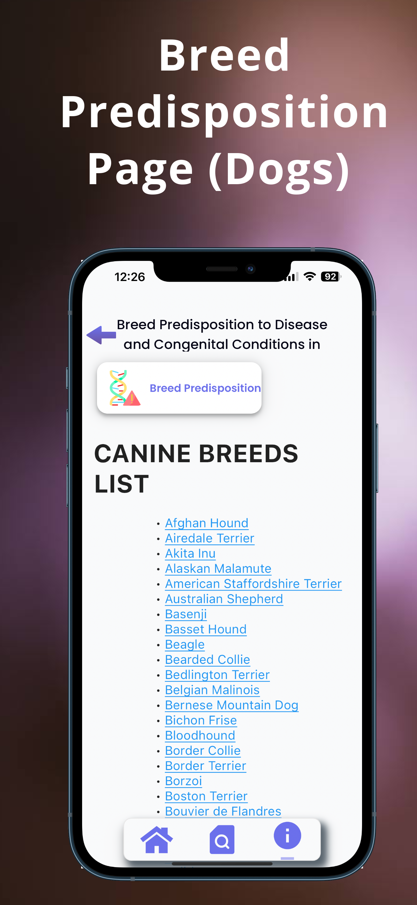
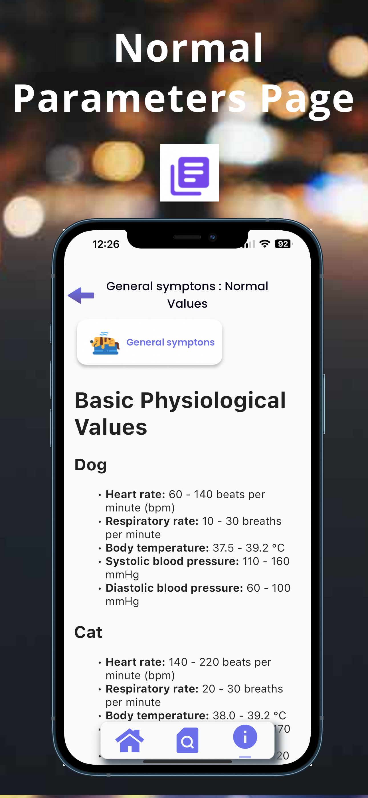
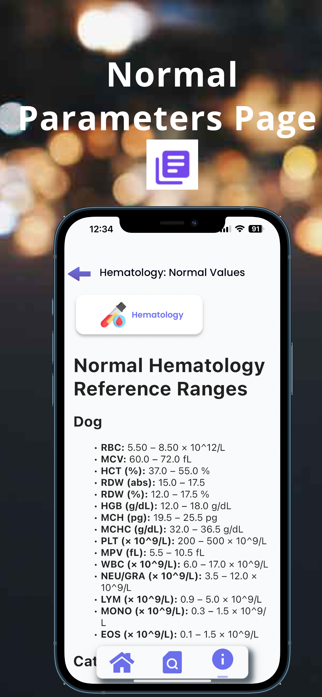
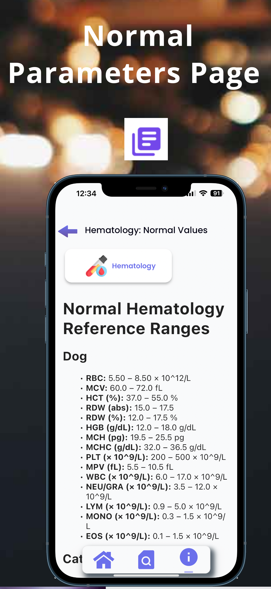
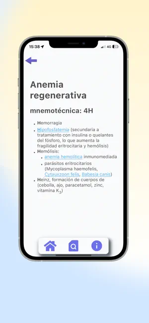
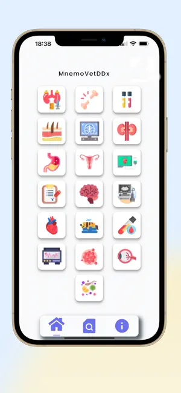
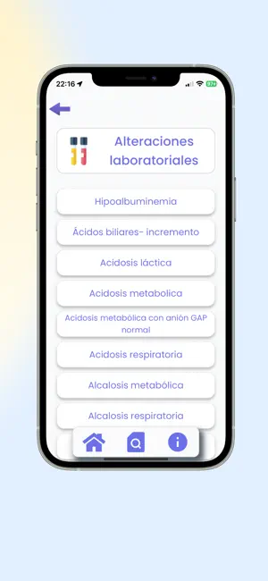
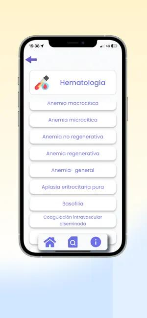
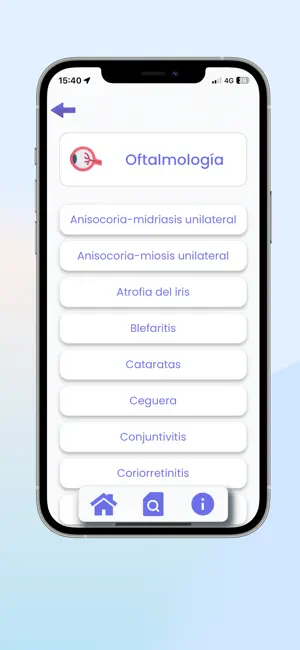
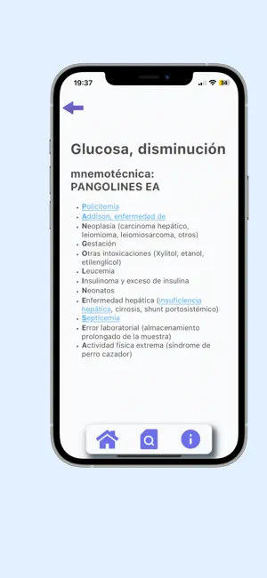
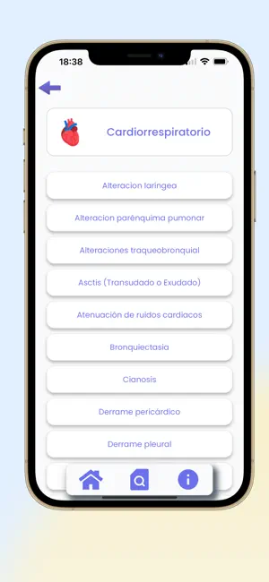


Contacto
Para contactarme, haz clic en el siguiente enlace para abrir tu cliente de correo:
Enviar mail a airsoto@gmail.com